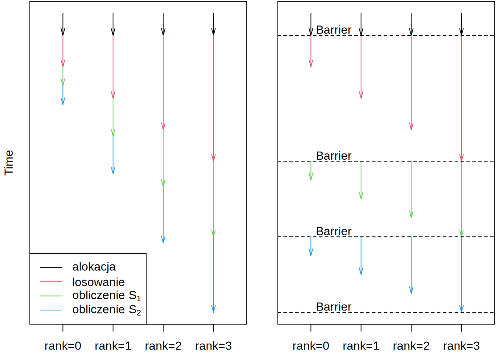

Obliczenia z wykorzystaniem komputerów są nieodłączną częścią współczesnej nauki. Natomiast, podstawą obliczeń komputerowych są obliczenia równoległe. Gdy korzystamy z 1 komputera, nawet bardzo mocnego, jesteśmy ograniczeni do około 32 procesorów (obecnie) i kilkuset Gb pamięci RAM. Co więcej, czas obliczeń spada (przynajmniej tego byśmy sobie życzyli) jak 1/(liczba procesów). Dlatego z reguły potrzebujemy i chcemy wykorzystać ich jak najwięcej.
Każdy program przygotowany do pracy równoległej oprócz podstawowego algorytmu, potrzebuje mechanizmu komunikacji. W naszym przypadku będzie to standard MPI czyli Message Passing Interface. Biblioteka OpenMPI dostarcza nam narzędzi niezbędnych do uruchamiania i komunikacji między poszczególnymi procesami składającymi się na nasz “program”.
Przygotuj plik program.cpp o poniższej treści. Następnie skompiluj go za pomocą programu mpic++:
#include <stdio.h>
#include <mpi.h>
#include <unistd.h>
int main(int argc, char *argv[]) {
int numprocs, rank, namelen;
char processor_name[MPI_MAX_PROCESSOR_NAME];
MPI_Init(&argc, &argv);
MPI_Comm_size(MPI_COMM_WORLD, &numprocs);
MPI_Comm_rank(MPI_COMM_WORLD, &rank);
MPI_Get_processor_name(processor_name, &namelen);
printf("Hello World! from process %d out of %d on %s\n",
rank, numprocs, processor_name);
MPI_Finalize();
}Powyższy program można skompilować i uruchomić używając komend:
gdzie 4 to liczba procesorów, na których ma zostać uruchomiony program.
Przeanalizujmy teraz program. Funkcje MPI_Init i MPI_Finalize służą do odpowiednio inicjalizacji i zakonczenia komunikacji pomiedzy procesami. Powinny one być odpowiednio na początku i na końcu programu, ponieważ tylko pomiedzy nimi można wykonać jakiekolwiek wywołanie biblioteki MPI i komunikować się z innymi procesami w grupie. Wywołanie MPI_Comm_size zwroci nam liczbe procesów (np. 4), zaś MPI_Comm_rank zwróci nam numer naszego procesu (np. 0,1,2 lub 3). Zmienna rank jest wiec jedną z najważniejszych w kodzie, ponieważ odróżna nasze procesy. Jeśli jej nigdzie nie użyjemy, to wszystkie nasze procesy zrobią dokładnie to samo.
Rozszerz program tak, by każdy proces losował pewne liczby i wypisywał pewne statystyki:
a o rozmiarze n = 10000 * (rank + 1)a[0]Pamietaj aby we wszystkich komunikatach umieszczać zmienną rank, tak by było wiadomo, który komunikat pochodzi, od którego procesu. By mieć pewność, że komunikaty wypisywane są rzeczywiście wtedy, kiedy występują w kodzie (a nie są buforowane przez system), dodaj komendę fflush(stdout); zaraz po każdym wywołaniu printf. Intrukcja ta powoduje, że cały buforowany tekst zostanie wyświetlony na ekran od razu.
Aktualnie, losowanie jest bardzo niedoskonałe. Wszystkie procesy wylosowały ten sam ciąg losowy (można zobaczyć to już po pierwszym elemencie, który jest identyczny we wszystkich procesach. Żeby tego uniknąć przekaż np. wartość time(NULL) + rank jako ziarno do funkcji srand, tak aby ciąg losowy był zainicjalizowany inną liczbą na każdym procesorze.
Zaobserwuj, że różne procesy dochodzą do różnych etapów algorytmu w różnych momentach. Np. średnia dla procesu 0 może być wyznaczona przed wypełnieniem liczbami tablicy w procesie 1. Możemy wymusić aby procesy czekały na siebie nawzajem dodając instrukcję MPI_Barrier(MPI_COMM_WORLD); po wywołaniach printf/fflush. Bariera w programach wielowątkowych powoduje, że wszystkie procesy czekają w tym miejscu kodu, aż reszta procesów dojdzie do tego miejsca, a następnie wszystkie razem ruszają dalej. Zauważ, że powoduje to iż program działa tak wolno, jak jego najwolniejszy element. Przebieg programu we wszystkich procesach jest pokazany poglądowo na poniższym obrazku:

Użyj funkcji wykonującej redukcję aby obliczyć średnią globalną (po wszystkich procesach) i wariancję z \(a\). Redukcja w programowaniu równoległym polega na wykonaniu jakiejś operacji, np. sumowania czy wzięcia maxiumum, na danych ze wszystkich procesów. W bibliotece MPI mamy do dyspozycji funkcję:
source to wskaźnik do danych, które mamy np. zsumować.destination to wskaźnik do miejsca, gdzie ma być umieszczony wynik.count to liczba elementów danych do zsumowania. Czyli np. 1 jeśli dane to jedna liczba.datatype to typ danych, które sumujemy: MPI_INT lub MPI_DOUBLE.operation to operacja, którą wykonujemy, np: MPI_SUM lub MPI_MAX.root to numer procesu, do którego przesyłamy wynik, np: 0.MPI_COMM_WORLDUżyj tej funkcji aby obliczyć globalne statystyki, a następnie wyświetl je (pamietaj, że mają one sens tylko na węźle root). Weź pod uwagę, że globalne n jest inne niż n lokalne.
Bliźniaczą do funkcji MPI_Reduce jest funkcja MPI_Allreduce. Przesyła ona wynik do wszystkich procesów, a nie tylko do procesu root.
Stwórz nowy program równoległy program2.cpp, który będzie obliczał powyższą średnią i wariancję, używając tylko jednej pętli, bez alokowania tablicy a (tzn., będzie liczył średnią i wariancję bez przechowywania pojedyńczych elementów). By to zrobić przekształć wzór na wariancję:
\(\sigma^2 = \frac{1}{n-1}\sum_i\left(a_i - \frac{1}{n}\sum_j a_j\right)^2\)
tak aby był wyrażony za pomocą \(S_1\) i nowego \(\hat S_2 = \sum_i a_i^2\), który da się obliczyć bez znajomości średniej \(\mu\). Użyj we wszystkich procesach tego samego (bardzo wysokiego) n. Porównaj czas wykonania wykonując:
W przypadku każdego dużego systemu komputerowego potrzebny jest jakiś mechanizm zarządzania zasobami: 2 osoby nie mogą naraz korzystać z tego samego procesora/rdzenia. W prawdziwym systemie komputer centralny służy do zlecania zadań, pozostałe, tzw. węzły obliczeniowe, przyjmują i wykonują zadania. Na info3 jest tylko jeden węzeł który spełnia obie role.
Sprawdź co zrobi komenda qsub -I (wielka litera i). To program do wysyłania zadań do wykonania. Opcja -I oznacza tryb interaktywny: zostaniemy zalogowani na wolny węzeł przez ssh. Wpisz teraz qstat, sprawdź opcje -n i -f. Zobacz, że twoje ‘zadanie’ jest uruchomione w kolejce. Wyloguj się teraz, bo blokujesz zasoby kolejki. Jednocześnie mogą być wykorzystywane tylko 4 rdzenie. Ilością pobieranych zasobów można sterować poprzez flagę -l, np.:
Parametr walltime=00:00:10 mówi nam o maksymalnym czasie trwania zadania. Po upłynięciu tego czasu zadanie zostanie automatycznie przerwane.
W większości przypadków czas trwania zadania interaktywnego jest mocno ograniczony. Bardziej użyteczne są zadania nieinteraktywne. Aby zlecić takie zadanie potrzebny jest nam plik zadania plik.sh:
Zlecamy jego wykonanie przez
Obejrzyj zawartość katalogu, znajdź pliki o rozszerzeniu .oXX i .eXX. Czym one są? Dodaj do skryptu plik.sh komendę sleep 8, która spowoduje ze zadanie zaśnie na 8 sekund, tak by w liście wypisywanej przez qstat dało się je zobaczyć. Jako grupa możecie dodać wiele takich zadań i zobaczyć jak są po kolei realizowane przez kolejkę PBS.
Spróbuj wykonać któryś z wcześniejszych skryptów konwerujących obrazki (np konwersje .jpg na .gif) jako nieinteraktywne zadanie w kolejce.